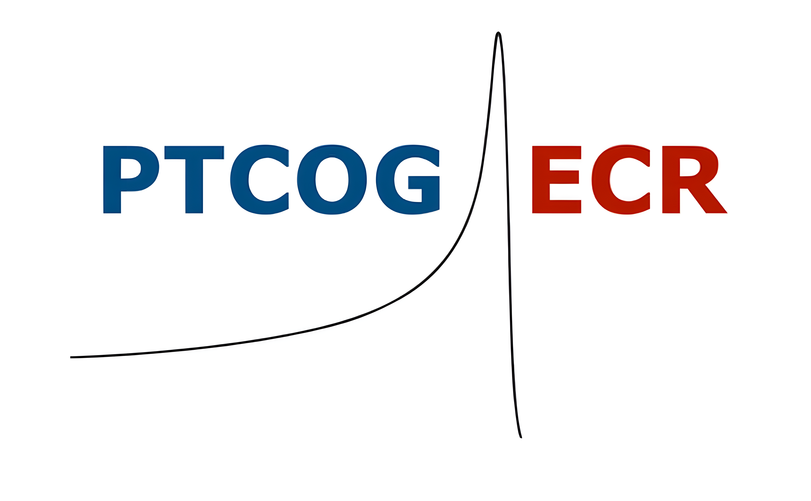

Membership
Join or update
Use these links for registration or to keep your contact details current.

The PTCOG ECR Subcommittee represents and supports early-career researchers and practitioners within the PTCOG community. It fosters international collaboration, provides networking opportunities, and promotes the professional development of the next generation of experts in particle therapy.
Use these links for registration or to keep your contact details current.
Join our WhatsApp community and follow us on LinkedIn!
If you are doing or have completed your PhD in the past 10 years, we’d love your input. The survey is anonymous, takes just ~10 minutes, and your insights will help improve the PhD journey for future researchers.
Here you can find all relevant information and registration links.
Book a 15-minute chat with an IBA expert at our booth, or register online via the PDF below.